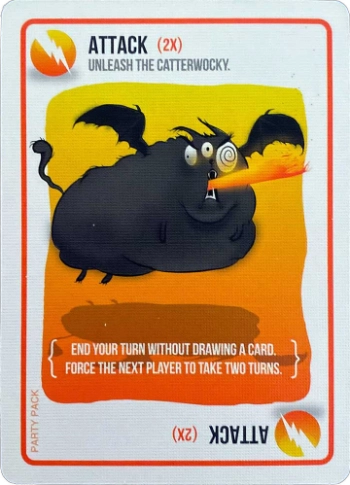
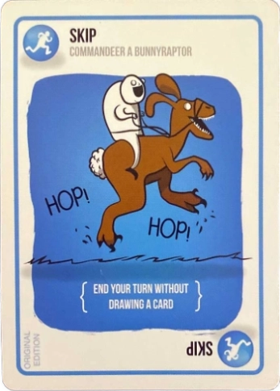
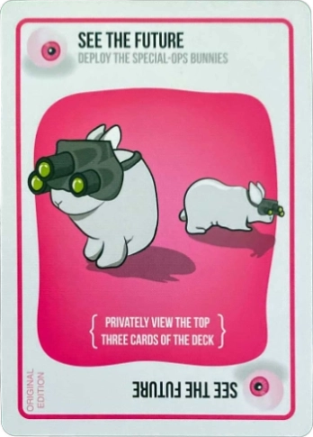

Attack (2x)

This card immediately ends your turn without drawing, and forces the next player to take two
turns in a row. That is, they’ll end up drawing 2 cards… unless they play another attack card.
In this case, the turns add up: the next player will take 4 turns, or the next might take 6…
This card is useful if you suspect that the next card is an Exploding Kitten.
Shuffle

Shuffle the draw pile.
Skip

This card immediately ends your turn without drawing a card. If this card is played in response
to an attack card, it only ends 1 out of 2 turns. 2 Skip cards can be played to fully cancel an
attack.
Nope

This powerful card allows you to inflict the power of sheer stubbornness on your opponents. Play
this to stop ANY action except for an Exploding Kitten or a Defuse card. Any card played
immediately before a nope card is cancelled, and a Nope card can be played at ANY time – even if
it isn’t your turn. Nope cards can also be stacked onto Nope cards to cancel the Nope.
See the Future

This card allows you to sneak a peek at the top 3 cards from the Draw pile and replace them in
the same order.
Favor

Force a player of your choosing to give you a card from their hand. This can be any card.
Cat Cards

These are useless alone, but as a matching pair can be played to steal a random card (blindly)
from any other player. As a matching trio, any card type can be requested from another player;
if they have the card, they must give it up.